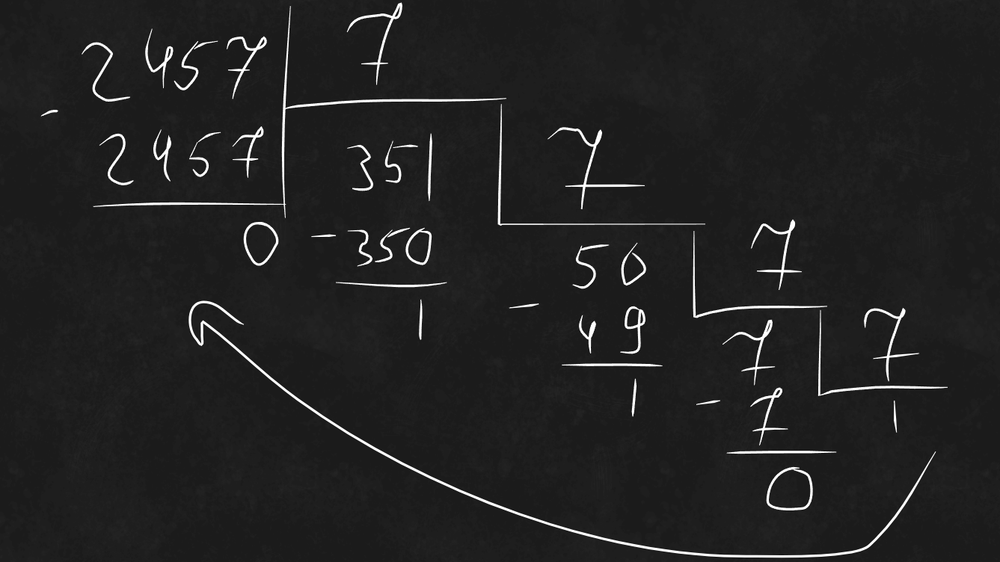
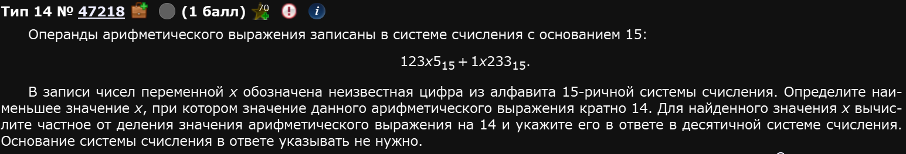
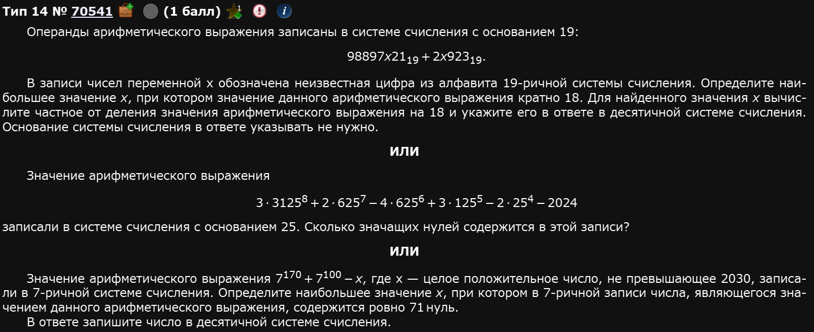
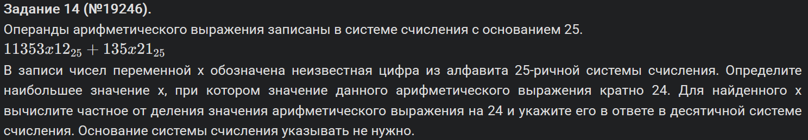
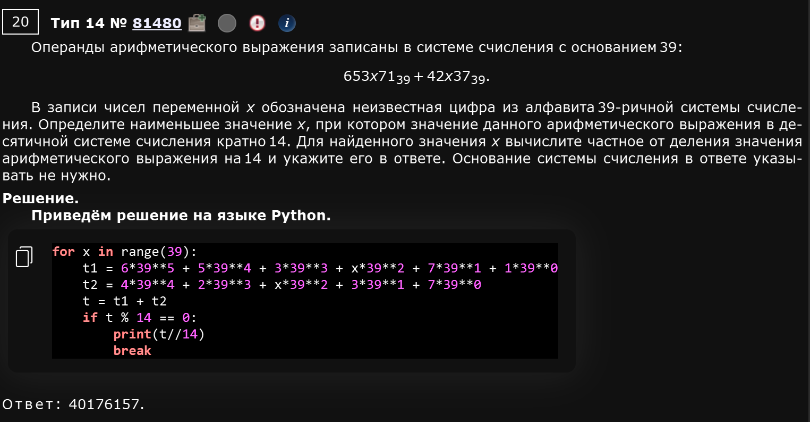

Это задание представляет из себя работу с числами и системами счисления. Начнем, как обычно, с простого.
При БОЛЬШОМ желании можно сделать и ручками, но, пожалуйста, не надо,,,
Пример 1)
Сначала зададим всю эту красоту:
n = 2*729**2014 + 2*81**2018 + 2*27**2020 - 2*9**2022 - 2024К сожалению, нельзя просто посчитать методом count, ведь все вот это вот говнище надо перевести в 27-ричную систему счисления. Дело нехитрое, если помните как это делается. На всякий случай напомню:
Чтобы перевести число из 10-чной в произвольную систему счисления
нужно последовательно делить его на основание новой системы счисления. Ручками это делается в столбик как-то вот так:

А затем остатки записываются в обратном порядке. Т.е. в этом примере число 2457 в 7-ричной системе счисления будет представляться как 10110.
Такой же принцип надо применить и в нашей программке.
Т.е. мы должны последовательно делить наше n до тех пор пока оно не станет равно 0 на 27. Параллельно с этим можно делать две вещи:
- Простым if вносить в некую переменную +1 каждый раз, когда прокает условие
- Создавать список по мере выполнения цикла, а после чекнуть сколько там элементов, которые >9
Первое выглядит проще для понимания, будем делать именно так.
Собираем прогу:
n = 2*729**2014 + 2*81**2018 + 2*27**2020 - 2*9**2022 - 2024
count = 0 #По сути, count - это просто счетчик
while n != 0:
if n % 27 > 9:
count += 1
n //= 27
print(count)Ответ: 2019.
Пример 2)

Выглядит страшно, но не стоит пугаться. По реализации этот едва ли страшнее, чем предыдущий, он страшнее по идеи.
Итак, как же найти этот х? Простым перебором, разумеется. Т.е. мы будем прогонять все значения из возможных в системе счисления, в которой указаны числа, т.е. 15, подставлять их вместо х и смотреть делится ли получившееся на 14 без остатка. Ежели да, принтуем и ломаем цикл.
Собсна все, описали основную идею, осталось реализовать прогу:
for x in '0123456789abcde': #Все цифры 15-ричной системы
x1 = '123' + str(x) + '5' #Первое число (перый операнд)
x2 = '1' + str(x) + '233' #Второе число (второй операнд)
res = int(x1, 15) + int(x2, 15) #Их сумма
if res % 14 == 0: #Условие четности 14-ти
res //= 14
print(res)
breakОтвет: 8767.
Пример 3)

Решим все три по порядку.
Пример 3.1)
Покажу немного другой способ решения прототипа с х (первое из этих трех). Дело в том, что иногда цифры в различных системах счисления бывают довольно большими, например 19-ричная система. Это типа вот такие вот цифры:
Соответственно, чем больше система счисления, тем больше этих цифр и писать их бывает довольно запарно. Можно сократить себе путь импортом букв из библиотеки string:
from string import ascii_lowercase #Буквально импортирует все буквы латинского алфавита нижнего регистра с a до zТолько потом надо будет к этому всему говну прибавить еще и числа:
alp = '0123456789' + ascii_lowercaseПравда, в таком случае, пайтон будет ругаться на вас. Ему не понравится, что вы попытайтесь преобразовать неприятный для него символ через int. Это нормально. Программа все равно сработает как надо.
Далее производим стандартные для этого задания действия: задаем числа, делаем их сумму через int, чекаем на if и если да, то принтуем:
from string import ascii_lowercase
alp = '0123456789' + ascii_lowercase
for x in alp:
r = int('98897' + x + '21', 19) + int('2' + x + '923', 19)
if r % 18 == 0:
print(r // 18)Первое выданное число программой будет являться ответом.
Ответ: 469034148.
Пример 3.2)
Покажу два способа решить такое задание.
def f(n,d): #Определяем функцию, куда будут кидаться результаты преобразования в 25-ричную систему
res = []
while n != 0: #Цикл преобразования
res.append(n % d)
n //= d
return res[::-1] #Не забываем вернуть в обратном порядке, хоть в этом задании это не так важно
n = 3*3125**8 + 2*625**7 - 4*625**6 + 3*125**5 - 2*25**4 - 2024
print(f(n,25).count(0)) #Тупо считаем все ноликиВторой способ: без определения функции, простой счетчик.
n = 3*3125**8 + 2*625**7 - 4*625**6 + 3*125**5 - 2*25**4 - 2024
c = 0
while n != 0:
if n % 25 == 0:
c +=1
n //= 25
print(c)Пример 3.3)
Прикольное, необычное задание. Сделаем тупо. Поставим обычный счетчик мол когда прокает деление с остатком равно нулю счетчик докидывает единичку в себя и если таких единичек 71 (т.е. в числе 71 нуль), то запринтуем его. Единственный нюанс - мы, таким образом, запринтуем минимальное, а не максимальное. Это не проблема, цикл можно прогнать в обратном порядке.
for x in range (2030, 1, -1): #Третий аргумент цикла специально выбран -1. Обычно он отвечает за шаг, по умолчанию равен 1, мы поставили -1, чтобы прогонялся в обратном порядке. Пределы, соответственно, тоже поенялись местами.
t = 7**170 + 7**100 - x #Само число из условия
c = 0 #Обнуляем счетчик для каждого нового числа
while t != 0: #Цикл перевода в 7-ную
if t % 7 == 0: #Если число кратно 7 без остатка, тогда в итоговой записи будет нолик т.е. мы должны повысить счетчик на 1
c += 1
t //= 7
if c == 71: #По условию, если 71 нулик, то принтуем
print(x)
exit() #Нам нужно первое вылетевшее, дальше цикл гнать бесполезноОтвет: 2029.
Пример 4)

ЕГКР 2024
Аналогично первому:
for x in reversed('0123456789ABCDEFGHIJKLMNO'): # Цифры 25-ричной системы в убывающем порядке
x1 = '11353' + str(x) + '12' # Первое число (первый операнд)
x2 = '135' + str(x) + '21' # Второе число (второй операнд)
res = int(x1, 25) + int(x2, 25) # Их сумма
if res % 24 == 0: # Условие кратности 24
res //= 24
print(res)
break # Берем первое найденное максимальное xОтвет: 266249847
Пример 5)
